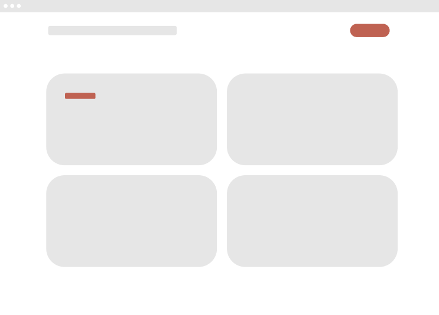
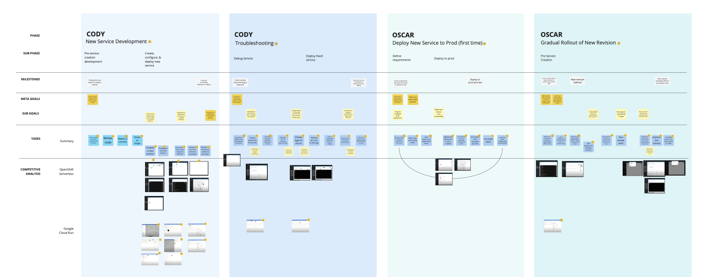
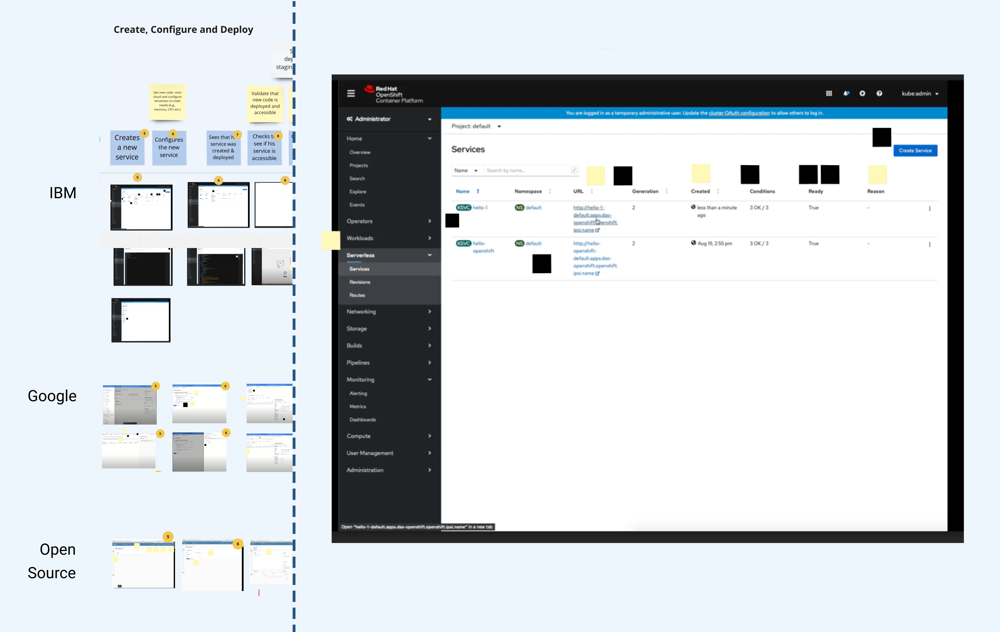
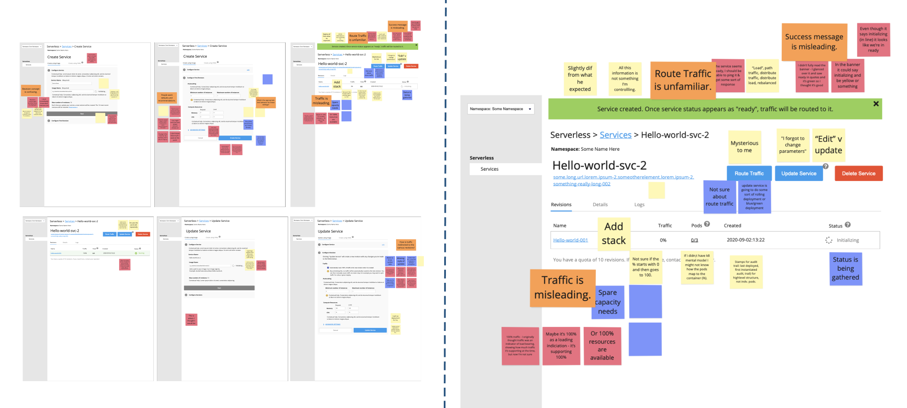
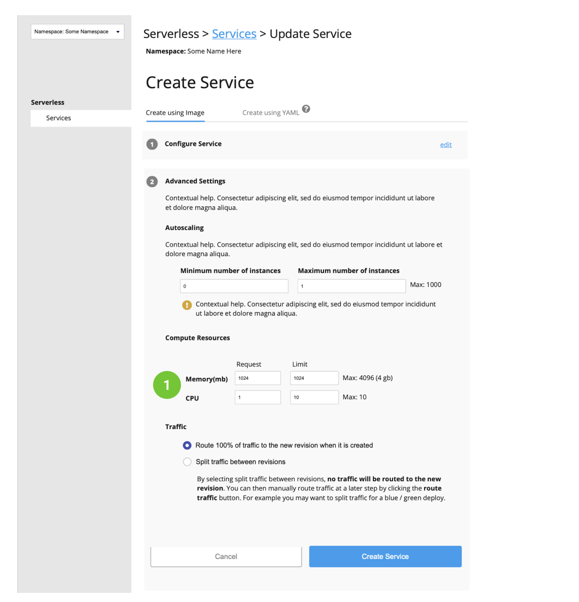
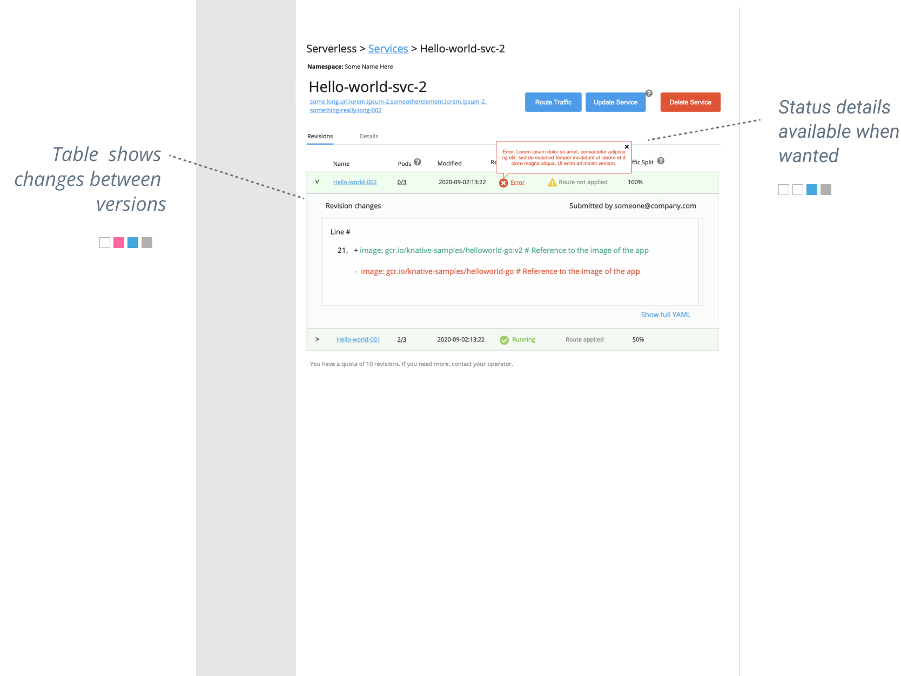

When a product manager and I kicked off this project, our company, VMWare, had acquired a startup that makes KNative, an open source technology that helps developers deploy apps on Kubernetes, a popular cloud-based operating system.
Our initial idea was to perform a heuristic evaluation of KNative’s GUI, make a few recommendations, and that would be the end of it. Instead, what we found was a UI that had been given little attention. We couldn’t fix it half way; it needed a redesign from the ground up.
The Problem
Data Model as the UI
Overall, the open-source UI looked like a reflection of a data model, and did not have well-tought-out flows, hierarchy, or layout. Below are a few examples of problems we found:
Data tables as the UI
The main interface consisted of four tables which seemed like tables you might find in a database (configurations, status messages, routes, revisions).
Disjointed layout
Information was not laid out logically. For example, system status information relevant to the table in the lower left appeared on the upper right.

Poor UX flow
The only actions available were a bit of clickable text on the upper left that said "configuration", which led to an editable config file, and a delete button on the upper right.
The Challenge
Lagging in the Market
Once we realized we needed to redesign the GUI from the ground up, we decided to make make it part of out propritary offering. There were a couple key drivers in our decision:
We were trailing competitors: IBM, Google and others were already providing KNative serverless solutions with proprietary GUIs.
GUIs are not a nice-to-haves: Large enterprises don't allow many of their developers direct access to software-building tools, so GUIs are often requirements for adoption.
My Role
Over a period of six weeks, I drove the overall approach to design as the design lead. I worked closely with a PM in planning workshops, conducting user interviews, and rapid prototyping.
Collaborators
On a daily basis, I worked with a product manager and engineering lead. Two visual designers rotated onto the project towards the end.
Business Case
Assessing Risk in the World of Open Source
We were building on open-source technology that had already survived contact with reality. That shaped how we thought about the risk.
Traffic splitting: Serverless makes it easy to split traffic between versions for A/B testing and gradual rollouts.
Design Strategy
Targeting Intermediates
Near the start of the design process, I like the team to imagine it's two years after launch and the product is very successful. I then ask, "Who is the average user? What are they like?"
For most large-scale enterprises, 97 to 99% of developers are early-career or contractors, and don’t have skills in managing and configuring cloud-based infrastructure1.
Our design strategy took this into account: We assumed most developers will be early-career and new to serverless, but will gain skill over time. Our target audience is that early-career developer several months after adoption.
This matrix shows how we targeted users by skill level, and who by definition should be the largest user cohort.
Strategic Objectives
Lower barriers to adoption to allow scale:Enable developers who are new to serverless to deploy to the technology regardless of their expertise in cloud infrastructure. This will allow customers to benefit from the value brought by serverless at scale.
For most large-scale enterprises, 97 to 99% of developers don’t have skills in managing and configuring cloud infrastructure.
Help developers become efficient:
Developers tend to gain expertise with technology over time, and will often graduate from using a GUI to more efficient workflows using the CLI and API. Our design should enable this gain in skill and confidence with little or no friction.
Get out of the way of advanced users:
High-skill developers will automate as much as possible. They comprise a small percentage of enterprise IT, but can play an outsized role, which can include evaluating new software tools2. Get out of their way and provide an API.
1 "Marketplace Experience Research Summary", 2019 by Kevin Gates and Glen Rogers
2 "What Happens After Alpha Research Summary", 2019 by Kevin Gates
Journey Mapping
Laying Out a Goal-Directed Narrative
The PM had created story maps by analyzing the open-source functionality, which did a good job at outlining features and aligning them with outcomes.
The problem is they didn't capture the narrative of the experience. User experiences are a series of activities that take place in the physical world in service of people achieving goals, which are often interconnected in logical ways.
I facilitated a workshop in which we deconstructed the story maps and created a narrative in the form of what I call a proto-journey map.

Our proto-journey map layed out a flow centered on user goals.
Objectives:
First and foremost, we wanted to have a foundation for ideation sessions in which we rethink the journey. In addition, we wanted to:
Have an agreed-upon model of what we as a team think we know about the current state of the journey.
Have a linear narrative which allow us to see the big picture and how tasks are connected and in service of the user reaching goals.
Have a way to fold in and organize other materials such as research findings and competitive analysis.
Anatomy of a proto-journey map. Stories were deconstructed and arranged a linear narrative with tasks, goals and milestones.
Competitive Analysis
Understanding the Competition
We took screenshots of our competitor's UIs and pasted them along our journey map, aligning them to user tasks. Our goal was to make sure we had parity with Google, IBM and the OS version, and to find inspiration in things they do well.

Miro's zoom feature allowed us to zoom into competitor UI screenshots and see details, while maintaining the context of user tasks and goals.
Competitor strengths
We liked Google’s stepper approach to creating and updating serverless apps and contextual help.
RedHat had advanced features we liked, such as allowing more experienced users to paste configurations into the UI rather than fill out a form.
Competitor weaknesses
Most UIs reflected data structures, not user mental models. Elements in UI not logically grouped together.
Poor / confusing wayfinding
System status messages incoherent
Lack of guided step-by-step flows or beginners (“Paste YAML here”)
Now that we understood something about our competitors and we had a model of the user journey, we set out to reimagine it.
We set up an ideation workshop (a.k.a., design studio) in which everyone (engineers, field engineers, design and PM) would sketch concepts. The goal was to get diverse perspectives to seed our creative process. I've found there are a few key attributes of effective workshops:
Getting the right people in the room: In my experience, this means customer advocates (if not actual customers), people from related projects, engineers, and domain experts.
Getting everyone into a creative midset That means getting people comfortable with the process, encouraging them to think laterally and, getting them into the user's shoes.
Do away with role boundaries: Everyone is a designer in my ideation workshops, but maintain a perspective of the world that comes from their past.
Discouraging ownership of ideas: I sometimes require participants to steal ideas from others and explain what they stole and why. If two ideas work great together, that will be good for customers. Allowing ownership of ideas impedes that.
Up-Voted Ideas
The value in ideation workshops is not in the sketches or other artifacts produced, but in the conversations about them. After everyone presented ideas, we dot voted, then discussed what we liked about the top ideas.
Intuitive information layout
Several people came up with similar designs that merged information from multiple sources into intuitive tables. Many had a visual representation of status.
Guided UX Flows
This sketch depicts stepper-like functionality. One thing we liked was that it showed how users can perform one task many different ways.
Performance analysis
Serverless technology will automatically free up system resources when an app has no traffic. When traffic returns, starting up cold can be slow. Exercising the scaling functionality, the showing how long cold starts take would enable developers to optimize for more responsiveness.
Change Log
Changes to apps (revisions) are described in YAML. This feature would create a diff between revisions, allowing developers to see exactly what changed. This could be an interesting place to start debugging. Debugging is the top pain point for serverless users1.
Rapid Prototyping
Rapid Prototyping
Iterating Towards a Solution
Cloud computing is very complex, and most designs I've worked on in the domain are like multivariate problems: There are many possible outcomes, which are dependent on many variables, which are often related in unknown ways.
These types of problems can be very challenging, and I've found an iterative approach with constant feedback is the best way to work through them.
Our inital attemps at grooming solutions showed we were largely in alignment.
User Feedback
Once we had groomed ideas from the workshop into an initial direction, we wanted to test it. We set up testing sessions with field engineers who are embedded on customer dev teams, as well as seasoned internal engineers. We then created a testing plan and wrote a discussion guide.
We got feedback from many types of users: experts, novices, field engineers, internal engineers. For each of these, we had two types of learning goals:
Evaluative (a.k.a., usability): Can the user complete given tasks? What about developers with no experience with serverless, can they understand everything?
Generative: When do developers use GUIs versus command lines? Why do they use them? What would they change in our UI, if anything?
Our usability tests had three primary user scenarios: Create, update and route traffic.
Interpreting Feedback
The Design-Test-Learn Loop
When appropriate, we sythesized feedback inline by affinity mapping stickies directly on the wireframes to maintain context. We moved quickly through many iterations and let the designs evolve as we learned.

This example has feedback from three users, each represented by a different color sticky.
We went through many iterations. We would synthesize findings regularly and fold them into the next iteration.
Small Details With Outsized Impact
Below is a detailed look at how we took feedback on iteration four and used it to shape iteration five. Some changes, such as the need for form defaults, at first seemed trivial, but ended up solving a significant pain point. Subtle concepts in the underlying KNative technology shaped wording in important ways.
4th-Iteration Problems:
No default values for compute resources (e.g., memory and CPU). When a developer is setting up serverless for the first time, they will have no idea how much memory their app will need. By asking this, we were forcing a question on them that could not be answered.
Wording for compute recource values ("Min", "Max") not aligned with open-source terminology. This risks creating disharmony when users toggle between the CLI and UI.
Additional "advanced settings" didn't make sense. We weren't sure what to put in the advanced settings, so we probed interviewees.

5th-Iteration Solutions:
Don't ask developers questions they can't answer. Offer preset default values to get developers up and running. They can figure out their app's compute needs later.
Wording for compute recource values aligned with open-source terminology ("Request", "Limit"). KNative uses AI to allocate memory, meaning memory is not "set", but "requested".
Made "advanced settings" the name of step, making language between "create" and "update" the same.
Additional Findings
Novice users were confused: A big part of the confusion was caused by a few terms associated with serverless technology that were overloaded (in particular, "service" and "traffic"). One tester thought he was configuring a database for the first 10 minutes of the interview.
GUIs can provide value for all users: GUIs can provide value for new users, early-career developers, seasoned veterans, and even expert users. This reinforced our initial assumptions.
“When a developer doesn’t know much about a new technology, just clicking a box is powerful.”
Design Solution
Pulling It All Together
After several iterations and feedback sessions, our wireframes started to feel more and more solid. There were several forces aligning in our designs:
Business strategy: Lower barriers to adoption
Design strategy: Target users by skill level
Harmony: Stay true to KNative conventions
User experience: Use well-known UX patterns
Sometimes these forces were complementary; sometimes they were competing. Below are examples of how they manifest themselves after many iterations and feedback sessions:
Business strategy
Design strategy
Harmony
User experience
Business strategy
Design strategy
Harmony
User experience

Business strategy
Design strategy
Harmony
User experience
Applying the Design System
Alpha Release
Designs by Stephy Mathew
Conclusion
Learnings
The project was unexpectedly challenging:
We designed a UI on top of two very opionated APIs (KNative and Kubernetes) and those opinions were often at odds with good UX principles. That created tension between the UX for advanced users, who want to see concepts they are familiar with, and novice users, who we wanted to hand-hold.
Embedding competitive analysis in the journey map is a keeper:
We found ourselves referring back to the analysis often, and I got feedback that others were doing the same.
Engineers have a creative superpower:
Engineers can imagine possibilities that are unthinkable to we lay people. These unthinkable thoughts hold the potential for differentiating features. This just reinforces what I already know—I always include engineers in the creative process : ) You can read more about that here.